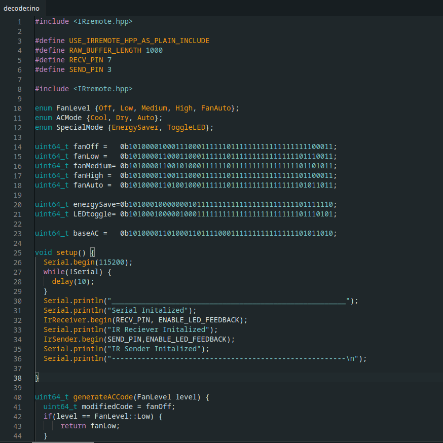

NASA Psyche Mission: AR/WebXR for Public Engagement - CERNN: Satellite Experience

This project envisions an interactive AR experience that allows users to explore the Psyche spacecraft and track the mission’s progress in real time. Through intuitive controls, users can see how long the satellite has been traveling, how far it has gone, and how much distance remains until arrival. The design emphasizes accessibility, ensuring audiences of all ages and abilities can engage with the mission through simple mobile gestures.
The experience is divided into two main flows: Explore the Spacecraft and Explore the Mission. Users can interact with a glowing 3D model of the spacecraft, clicking on instruments to learn how each supports Psyche’s scientific goals—such as determining whether Psyche is a planetary core or characterizing its surface topography. In parallel, a mission timeline highlights key milestones from launch to orbit, with countdowns and scrubbable progress markers that build anticipation and emotional connection.
By combining scientific detail with immersive storytelling, the design fosters curiosity and excitement about NASA’s Psyche Mission. It transforms complex data into an engaging narrative, helping audiences understand both the spacecraft’s technology and the broader scientific quest to uncover the mysteries of Psyche 16.
More Information >>>
Tags:
NASA Psyche Mission: AR/WebXR for Public Engagement - CERNN: Lore & Mythology Experience

In collaboration with NASA and Arizona State University, this project reimagines how audiences experience space exploration. Visitors interact with a 3D model of the Psyche asteroid, scan QR codes for interactive content, and step into the role of Annibale de Gasparis to rediscover Psyche using a period-accurate telescope. Mythological storytelling enriches the experience, drawing parallels between Psyche’s origins and symbolic imagery of transformation and the soul.
The journey transitions from the 19th-century discovery to NASA’s modern spacecraft mission, blending scientific exploration with mythological analogies. Users witness the spacecraft’s launch, orbital countdowns, and symbolic overlays that connect the mission to the “Breath of Life.” By merging history, mythology, and cutting-edge technology, the project engages audiences emotionally and intellectually, fostering curiosity and deeper connection to the Psyche Mission.
More Information >>>
Tags:
Deployment and Development of Genetic Algorithms in Sustainability

This project re-engineers a standard consumer AC remote into a connected IoT device, enabling centralized smart climate management. A custom base station integrates real-time API data on outside temperature and dew point with zone-specific controls and historical user preferences. By tracking usage patterns, the system learns preferred comfort levels and automatically adjusts cooling profiles to balance comfort with sustainability.
The design emphasizes adaptive intelligence: the base station continuously refines temperature settings across zones, creating optimized schedules that reduce energy consumption while maintaining user comfort. The IoT-enabled controller communicates directly with the AC unit, translating predictive insights into real-world adjustments. This results in a seamless, user-friendly system that modernizes traditional appliances into smart, sustainable devices.
This project demonstrates how IoT and data-driven design can transform everyday household technology. By merging environmental data, user behavior, and energy efficiency, the solution delivers both improved comfort and measurable reductions in energy usage—showcasing the potential of connected devices to drive smarter, greener living.
More Information >>>
Tags: